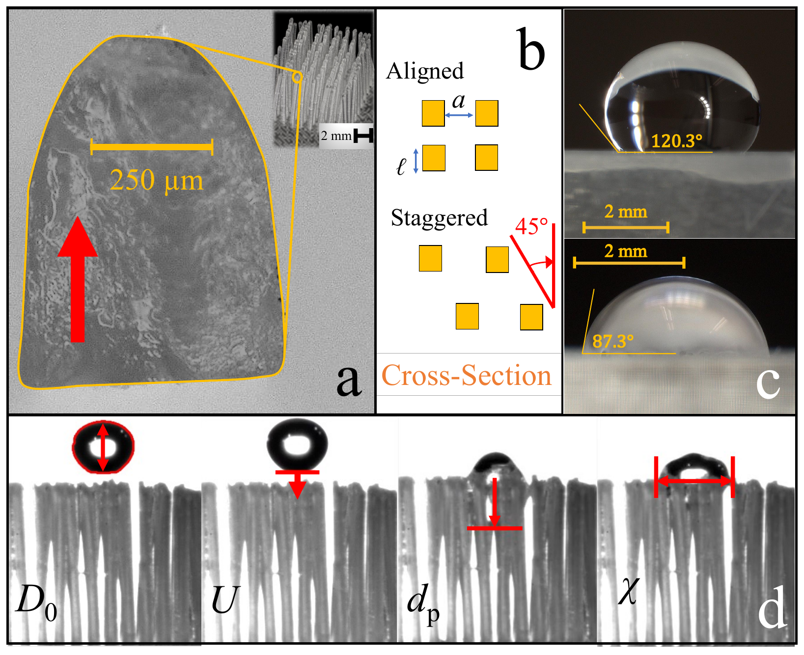
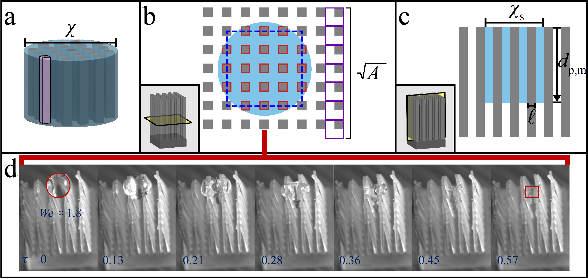
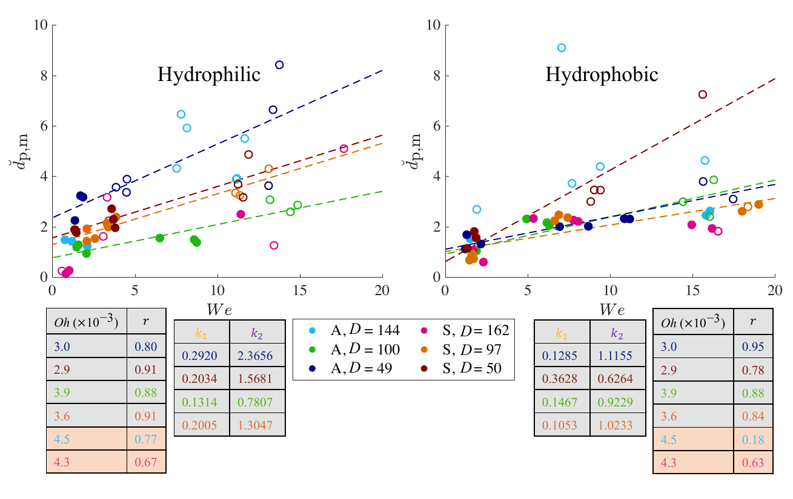
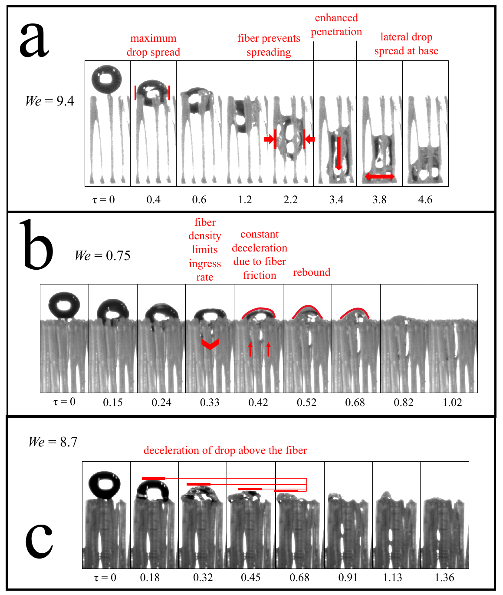

This experimental work investigates the impact dynamics of drops on vertically oriented, three-dimensional (3D)-printed fiber arrays with variations in packing density, fiber arrangement, and wettability. These fiber arrays are inspired by mammalian fur, and while not wholly representative of the entire morphological range of fur, they do reside within its spectrum. We define an aspect ratio, a modified aspect ratio relative to the drop size, that characterizes various impact regimes. Using energy conservation, we derive a model relating drop penetration depth in vertical fibers to the Weber number. In sparse fibers where the Ohnesorge number is less than 4 × 10⁻², penetration depth scales linearly with the impact Weber number. In hydrophobic fibers, density greatly reduces penetration depth when the contact angle is sufficiently high. Hydrophilic arrays have greater penetration than their hydrophobic counterparts due to capillarity, a result that contrasts with horizontal fibers. Vertical capillary infiltration of the penetrated liquid is observed whenever the Bond number is less than 0.11. For hydrophobic fibers, we predict higher density will produce complete drop penetration when the contact angle is sufficiently low. Complete infiltration by the drop is achieved at sufficient times regardless of drop impact velocity.
How it works and what we found
Why vertical arrays behave differently


The drop now impacts fiber tips rather than fiber sides, so its kinetic energy converts to penetration through a different geometric channel. We tabulate the new impact regimes via a modified aspect ratio.
An energy-conservation model for penetration depth

We balance kinetic energy at impact against the work done by drag and capillary forces on the descending liquid front. In the sparse regime (Oh < 4 × 10⁻²) the prediction is linear in We; experiments confirm.
Capillarity helps hydrophilic vertical arrays penetrate

In contrast to horizontal fibers, vertical hydrophilic arrays draw additional liquid downward via capillarity, deepening the wetted column.
A Bond-number criterion for capillary wicking

Whenever the Bond number of the residual drop falls below 0.11, the trapped liquid wicks vertically along the fibers, extending the effective penetration depth beyond what impact alone would predict.